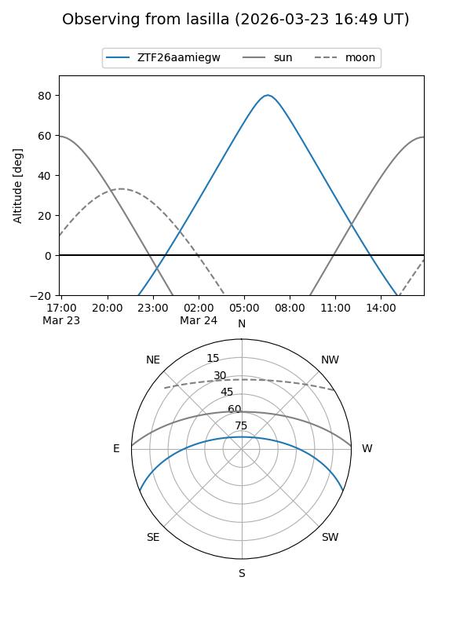
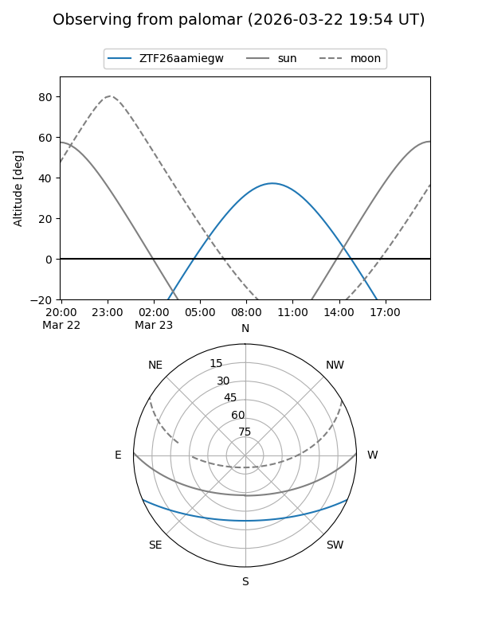

ZTF26aamiegw
Target ZTF26aamiegw at 2026-03-23 09:58
Aliases and brokers:
FINK: link
Lasair: link
ALeRCE: link
alt names
ZTF26aamiegw (ztf,fink_ztf)
Coordinates:
equatorial (ra, dec) = 208.9706,-19.25147
equatorial (HMS+DMS) = 13:55:52.94,-19:15:05.30
galactic (l, b) = (323.2639,+41.06208)
Flags:
Photometry:
last ztfg=16.54
1 ztfg detections
Lightcurve
Visibility


Additional plots